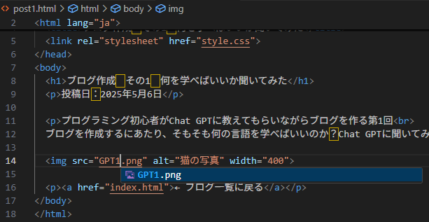

カテゴリ:ブログ作成～公開まで～
投稿日：2025年5月6日
前回HTMLファイルにスタイルを適用することができたので、今回は実際に記事を書いてみたいと思います。
Chat GPTに聞いてみます。
まずは記事ページとなるpost1.htmlを作成するようですね！
第2回のindex.htmlを作ってみる。で作成したときに既にリンクが作成されていましたね！
ではVSC上でpost.htmlを作成します。
赤い四角で囲った部分を押して、でてきた入力欄にpost1.htmlと入力します。
そしたら作成したファイルにコードを入力するらしい。
使われているコードはindex.htmlを作ったときと同じなので、今回は丸々コピーして貼り付けます。
post.htmlを開いて確認してみましょう。
おー！！！これが実際の記事かー！！！なんかそれっぽくなってきた！！
これでようやく記事の土台ができたので、実際の記事の内容に変えていきます！
タイトルや本文を、実際に書きたい内容に書き換えました。
この記事内に画像を表示させたいと思います。
コードの説明や、ファイルの置く場所など丁寧に解説してくれてますね！
しかもステップ方式でわかりやすく解説してくれます。
教えてくれた通りに、my-blogフォルダ内に画像ファイルを用意します。
そしたらリンクのコードを入力します。
ここでも入力の補助が役立ちます。ファイル名を入力するとファイル候補が表示されるので、ファイル名を間違える心配も無さそう。
post1.htmlを開いて確認してみましょう。
おー！！！画像が表示されたー！！！これで記事が書けますね！！！
そんなこんなで書いた続きがブログ作成 その1 何を学べばいいか聞いてみたになります。
せっかく記事を作成したので、言われるがままつくったトップページ

の記事リストを更新しましょう！
赤枠で囲った、記事タイトルとその要約文を編集。
index.htmlを開いて確認してみましょう！

おー！！読み込みがうまくいってないときのトップページぐらいにはなってきた！
なんか空白が全角なのが違和感なのと文章が長いので改善の余地しかないけどなんとか形になりました。
とりあえず記事は1本書けたので今回はここまで。
次回は記事にカテゴリーを設定してトップページにカテゴリ一覧を作成する。かも。
カテゴリ:ブログ作成～公開まで～